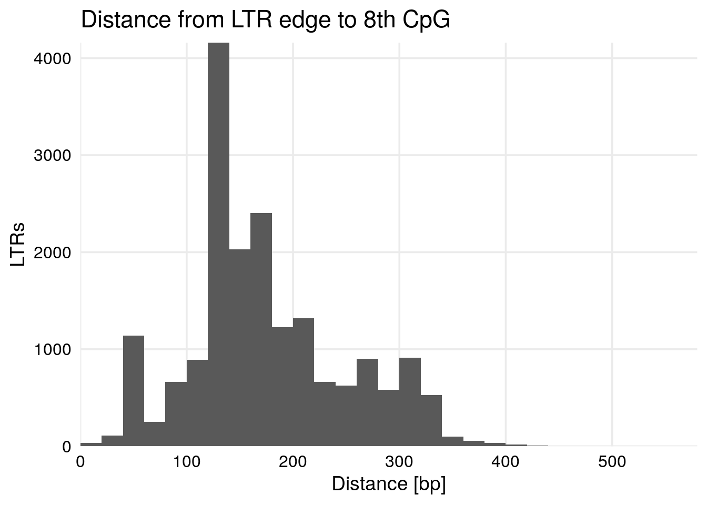
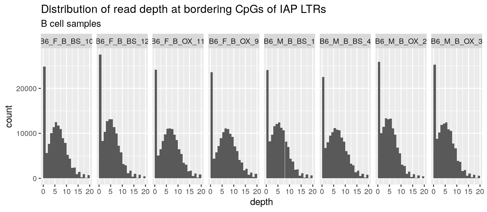
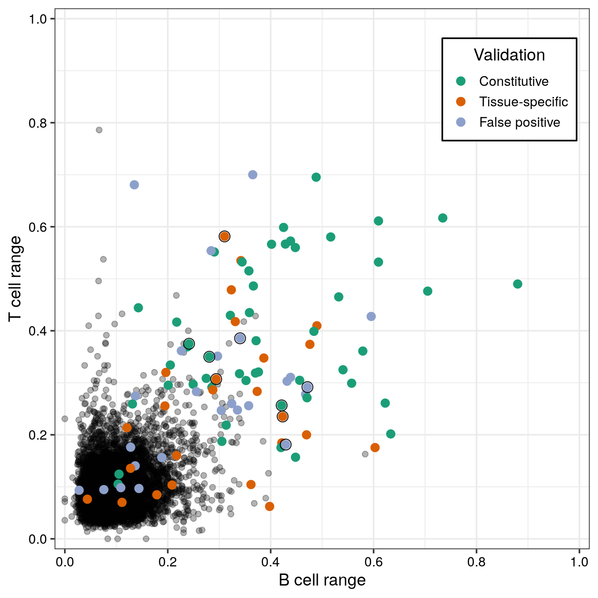

Last updated: 2020-07-13
Checks: 6 1
Knit directory: Paper_VMIAP_2020/
This reproducible R Markdown analysis was created with workflowr (version 1.6.2). The Checks tab describes the reproducibility checks that were applied when the results were created. The Past versions tab lists the development history.
Great! Since the R Markdown file has been committed to the Git repository, you know the exact version of the code that produced these results.
Great job! The global environment was empty. Objects defined in the global environment can affect the analysis in your R Markdown file in unknown ways. For reproduciblity it’s best to always run the code in an empty environment.
The command set.seed(20200511) was run prior to running the code in the R Markdown file. Setting a seed ensures that any results that rely on randomness, e.g. subsampling or permutations, are reproducible.
Great job! Recording the operating system, R version, and package versions is critical for reproducibility.
To ensure reproducibility of the results, delete the cache directory 02.Screen_for_VM_IAP_cache and re-run the analysis. To have workflowr automatically delete the cache directory prior to building the file, set delete_cache = TRUE when running wflow_build() or wflow_publish().
Great job! Using relative paths to the files within your workflowr project makes it easier to run your code on other machines.
Great! You are using Git for version control. Tracking code development and connecting the code version to the results is critical for reproducibility.
The results in this page were generated with repository version ac7ca22. See the Past versions tab to see a history of the changes made to the R Markdown and HTML files.
Note that you need to be careful to ensure that all relevant files for the analysis have been committed to Git prior to generating the results (you can use wflow_publish or wflow_git_commit). workflowr only checks the R Markdown file, but you know if there are other scripts or data files that it depends on. Below is the status of the Git repository when the results were generated:
Ignored files:
Ignored: analysis/01.IAP_Annotations_cache/
Ignored: analysis/02.Screen_for_VM_IAP_cache/
Untracked files:
Untracked: 01.IAP_Annotations.Rmd
Untracked: __pycache__/
Untracked: code/CTCFChIPatVM-IAPs_narrowpeak.sh
Untracked: code/CTCFChIPatVM-IAPs_pvalueRelax_narrowpeak.sh
Untracked: code/CTCF_Analysis.Rmd
Untracked: code/CTCF_motif_in_IAP.Rmd
Untracked: code/CpGdensity_VM-IAPs.R
Untracked: code/combine_8Indiv_CTCFChIP.r
Untracked: code/combine_8Indiv_CTCFChIP_pvalueRelax.r
Untracked: code/data_functions.R
Untracked: code/demultiplex4C_5indiv.sh
Untracked: code/genomics_functions.R
Untracked: code/heatmaps_NJK.R
Untracked: code/map.commands_cp.sh
Untracked: code/mergeBam
Untracked: code/normalize_log2.sh
Untracked: code/normalize_log2_IAP_consensus.sh
Untracked: code/normalize_log2_mergedBams.sh
Untracked: code/plot_chip_in_iap.R
Untracked: code/run_fimo_top10percent.sh
Untracked: code/run_meme_top_10_percent.sh
Untracked: data/R_objects/
Untracked: data/misc/Schema_for_rmskOutCurrent.html
Untracked: data/repeat_annotations/
Untracked: data/validation/
Untracked: unsorted.Rmd
Unstaged changes:
Modified: README.md
Modified: analysis/01.IAP_Annotations.Rmd
Deleted: data/misc/example_broken_IAP.PNG
Note that any generated files, e.g. HTML, png, CSS, etc., are not included in this status report because it is ok for generated content to have uncommitted changes.
These are the previous versions of the repository in which changes were made to the R Markdown (analysis/02.Screen_for_VM_IAP.Rmd) and HTML (docs/02.Screen_for_VM_IAP.html) files. If you’ve configured a remote Git repository (see ?wflow_git_remote), click on the hyperlinks in the table below to view the files as they were in that past version.
| File | Version | Author | Date | Message |
|---|---|---|---|---|
| Rmd | ac7ca22 | Noah Kessler | 2020-07-13 | Fixed eval=FALSE for chunk showing methy coverage plot |
| html | f290fa8 | Noah Kessler | 2020-07-13 | Build site. |
| Rmd | 3711a57 | Noah Kessler | 2020-07-13 | wflow_publish(“analysis/02.Screen_for_VM_IAP.Rmd”) |
library(dplyr)
library(tidyr)
library(readr)
library(reshape2)
library(GenomicRanges)
library(ggplot2)
knitr::opts_chunk$set(message = FALSE)
source("code/genomics_functions.R")
source("code/data_functions.R")CpGs.in.region <- function(CpG.gr, region.gr, N.CpG=0, from.right=FALSE) {
ovlps <- as.data.frame(findOverlaps(CpG.gr, region.gr))
ovlps$CG.pos <- start(CpG.gr[ovlps$queryHits])
if (from.right) {
ovlps <- ovlps %>% arrange(subjectHits, desc(CG.pos))
}
selected.CGs <- ovlps %>%
group_by(subjectHits) %>%
mutate(CG.index=1:n())
if (N.CpG > 0) {
selected.CGs <- selected.CGs %>% top_n(-N.CpG, CG.index)
}
selected.CGs <- selected.CGs %>%
dplyr::select(-queryHits) %>%
as.data.frame()
colnames(selected.CGs) <- c("index", "CG.pos", "CG.index")
selected.CGs$side <- if (from.right) "right" else "left"
selected.CGs
}
get.files.and.names <- function(dir, pattern) {
files <- file.path(dir, list.files(dir, pattern))
names <- as.character(
sapply(files, function(n)
paste(strsplit(basename(n),"\\.")[[1]][1:2], collapse="_")
))
list(names = names, files = files)
}
LTR.CpG.methy <- function(LTR.CG.df, files, sample.names, shift=0, just.counts=FALSE) {
stopifnot(length(sample.names) == length(files))
for (f.idx in 1:length(files)) {
cat(sample.names[f.idx],"\n")
sample.data <- read.table(files[f.idx], header=FALSE)
if (just.counts) {
colnames(sample.data) <- c("chrom", "CG.pos",
paste0(sample.names[f.idx], ".umC"), paste0(sample.names[f.idx], ".mC"))
} else {
colnames(sample.data) <- c("chrom", "CG.pos",
paste0(sample.names[f.idx], ".umC"), paste0(sample.names[f.idx], ".mC"),
paste0(sample.names[f.idx], ".depth"), paste0(sample.names[f.idx], ".methy"))
}
sample.data$chrom <- factor(sample.data$chrom, levels=levels(LTR.CG.df$chrom))
sample.data$CG.pos <- sample.data$CG.pos + shift #shift to 1-indexed pos
LTR.CG.df <- left_join(LTR.CG.df, sample.data, by=c("chrom", "CG.pos"))
}
LTR.CG.df
}
element.mean <- function(CG.methy, min.N.CG=0) {
CG.methy %>%
dplyr::select(element.ID, side, CG.index, ends_with(".umC"), ends_with(".mC")) %>%
gather("samp_state", "count", ends_with("mC")) %>%
separate(samp_state, c("sample", "m.state"), "\\.") %>%
spread(m.state, count) %>%
filter(!is.na(mC) & !is.na(umC)) %>%
group_by(element.ID, side, sample) %>%
filter(n() >= min.N.CG) %>%
summarize(total.count = sum(mC+umC), methy=sum(mC) / total.count)
}
calculate.ranges <- function(means, min.count, min.samps, prefix=NULL) {
means %>%
filter(total.count >= min.count) %>%
group_by(element.ID, side) %>%
filter(n() >= min.samps) %>%
arrange(desc(methy)) %>%
summarize(range1=first(methy)-last(methy),
range2=nth(methy, 2)-nth(methy,n()-1)) %>%
{ if (!is.null(prefix))
rename_at(., vars(-c("element.ID", "side")), ~ paste0(prefix, .))
else .
}
}
plot.ranges <- function(rng.gr, x.col, y.col, side=NULL, ME.only = FALSE) {
if (!is.null(side)) rng.gr <- rng.gr[rng.gr$side == side]
if (!ME.only) {
plt <- ggplot(rng.gr, aes_string(x=x.col, y=y.col)) +
geom_point(alpha=0.3)
} else {
plt <- ggplot(rng.gr, mapping = aes_string(x=x.col, y=y.col))
}
plt <- plt +
geom_point(data=rng.gr %>% filter(!is.na(ME)), aes(fill=ME), shape=21) +
geom_hline(yintercept=0.1, color="blue", alpha=0.5) +
geom_vline(xintercept=0.1, color="blue", alpha=0.5) +
theme_bw()
plt
}With an improved annotation of IAPs, the next step is to get a more robust set of DNA methylation levels at the CpGs within IAP LTRs from the Blueprint data. Because IAPs are of varying length and because their repetitive nature prevents Illumina reads from mapping unambiguously on the inside of the elements, only the outer-most CpGs on either edge of each IAP are considered.
N.CPG <- 8
mm10.IAP.gr <- readRDS("data/R_objects/mm10.IAP.gr.RDS")
# look at 'left'-most CpGs from the 5' end of + strand LTRs
# and from the 3' end of - strand LTRs
mm10.IAP.LTR.look_left <- mm10.IAP.gr[with(mm10.IAP.gr,
is.LTR & ((first.subelement & strand == "+") | (last.subelement & strand == "-"))
)]
# look at 'right'-most CpGs from the 3' end of + strand LTRs
# and from the 5' end of - strand LTRs
mm10.IAP.LTR.look_right <- mm10.IAP.gr[with(mm10.IAP.gr,
is.LTR & ((first.subelement & strand == "-") | (last.subelement & strand == "+"))
)]
# load mm10 CpG locations
mm10.CpG.gr <- sortSeqlevels(readRDS("data/R_objects/mm10.CpG.gr.RDS"))
mm10.CpG.gr <- sort(mm10.CpG.gr) # should be sorted, but force anyway since it's needed
# define relevant CpGs
mm10.IAP.LTR.CpGs <- rbind(
index.r_join(
mm10.IAP.LTR.look_left,
CpGs.in.region(mm10.CpG.gr, mm10.IAP.LTR.look_left, N.CPG, FALSE)
),
index.r_join(
mm10.IAP.LTR.look_right,
CpGs.in.region(mm10.CpG.gr, mm10.IAP.LTR.look_right, N.CPG, TRUE)
)
) %>%
arrange(element.ID, side, CG.index) %>%
dplyr::select(seqnames, start, end, strand, repName, element.ID, side, CG.pos, CG.index)
colnames(mm10.IAP.LTR.CpGs)[1] <- "chrom"
mm10.IAP.df <- mm10.IAP.gr %>%
as.data.frame() %>%
group_by(element.ID, seqnames, strand) %>%
summarize(start=min(start), end=max(end))
#mm10.IAP.LTR.adj.CpGs <- rbind(
# index.r_join(mm10.IAP.LTR.look_left, CpGs.in.region(mm10.CpG.gr, mm10.IAP.LTR.adjacent.look_right, 0, TRUE)),
# index.r_join(mm10.IAP.LTR.look_right, CpGs.in.region(mm10.CpG.gr, mm10.IAP.LTR.adjacent.look_left, 0, FALSE))
#) %>%
# arrange(element.ID, side, CG.index) %>%
# dplyr::select(seqnames, start, end, strand, repName, element.ID, side, CG.pos, CG.index)
#
#mm10.IAP.LTR.adj.CpGs <- rbind(
# index.r_join(
# mm10.IAP.LTR.look_left,
# CpGs.in.region(mm10.CpG.gr, mm10.IAP.LTR.adjacent.look_right, 0, TRUE)
# ),
# index.r_join(
# mm10.IAP.LTR.look_right,
# CpGs.in.region(mm10.CpG.gr, mm10.IAP.LTR.adjacent.look_left, 0, FALSE)
# )
#) %>%
# arrange(element.ID, side, CG.index) %>%
# dplyr::select(seqnames, start, end, strand, repName, element.ID, side, CG.pos, CG.index)
#colnames(mm10.IAP.LTR.adj.CpGs)[1] <- "chrom"The number of CpGs selected for these analyses is 8. How far do 8 CpGs tend to reach inside of the repeat? If the 8th CpG is too far inside of the repeat, and it will rarely (if ever) be mappable using Illumina sequencing.
dist.from.edge <- rbind(
cbind(mm10.IAP.LTR.CpGs %>%
filter(side=="left") %>%
group_by(element.ID) %>%
summarize(dist=max(CG.pos-start)),
side="left"),
cbind(mm10.IAP.LTR.CpGs %>%
filter(side=="right") %>%
group_by(element.ID) %>%
summarize(dist=max(end-CG.pos)),
side="right")
)
ggplot(dist.from.edge) +
geom_histogram(aes(x=dist), binwidth=20, center=10) +
theme_minimal(base_size=14) +
ggtitle(sprintf("Distance from LTR edge to %s CpG", toOrdinal::toOrdinal(N.CPG))) +
xlab("Distance [bp]") +
ylab("LTRs") +
scale_x_continuous(expand=c(0,0)) +
scale_y_continuous(expand=c(0,0)) +
theme(axis.text=element_text(color="black", size=12),
panel.grid.minor=element_blank())
| Version | Author | Date |
|---|---|---|
| f290fa8 | Noah Kessler | 2020-07-13 |
Indeed, many of the regions have their 8th CpG located deep within the repetitive region. This highlights the need to filter mapped reads by their MAPQ, as unconfidently-mapped reads may reach deep into the LTR.
methy.data.dir <- "/data/blueprint/bs-seq/methy/BL6/near_IAP_500/"
methy.samples.B <- get.files.and.names(methy.data.dir, "^B6_[FM]_B_.*\\.methy\\.combined_strand\\..*\\.tsv$")
methy.samples.T <- get.files.and.names(methy.data.dir, "^B6_[FM]_T_.*\\.methy\\.combined_strand\\..*\\.tsv$")
LTR.methy.B <- LTR.CpG.methy(mm10.IAP.LTR.CpGs, methy.samples.B$files, methy.samples.B$names, 0, TRUE)
LTR.methy.T <- LTR.CpG.methy(mm10.IAP.LTR.CpGs, methy.samples.T$files, methy.samples.T$names, 0, TRUE)
#LTR.methy.adj.B <- LTR.CpG.methy(mm10.IAP.LTR.adj.CpGs, methy.samples.B$files, methy.samples.B$names, 0, TRUE)
#LTR.methy.adj.T <- LTR.CpG.methy(mm10.IAP.LTR.adj.CpGs, methy.samples.T$files, methy.samples.T$names, 0, TRUE)Initially, I was planning to calculate CpG-level methylation at each of the 8 CpGs nearest the unique region in each LTR. However, when we look at the actual coverage of CpGs in these regions, we find almost none of the CpGs passes a liberal threshold of 10x depth.
LTR.methy.B %>%
dplyr::select(chrom, CG.pos, ends_with("mC")) %>%
gather("sample", "call.depth", -chrom, -CG.pos) %>%
separate(sample, c("sample", "call"), sep="\\.") %>%
replace_na(list(call.depth=0)) %>%
group_by(chrom, CG.pos, sample) %>%
summarize(depth=sum(call.depth)) %>%
ggplot(aes(x=depth)) +
geom_histogram(binwidth=1, center=0.5) +
facet_grid(~ sample) +
xlim(c(0, 20)) +
ggtitle("Distribution of read depth at bordering CpGs of IAP LTRs", subtitle="B cell samples")Warning: Removed 14185 rows containing non-finite values (stat_bin).
Thus, it makes more sense to consider the LTRs on a regional level. The strategy then is to combine all the methylation calls from each LTR edge, and produce a single methylation value which is not influenced by the depth of coverage at any of the individual CpGs.
MIN.N.CG <- 4
MIN.COUNT <- 20
MIN.SAMPS <- 5
LTR.means.B <- element.mean(LTR.methy.B, MIN.N.CG)
LTR.means.T <- element.mean(LTR.methy.T, MIN.N.CG)
#LTR.means.adj.B <- element.mean(LTR.methy.adj.B, MIN.N.CG)
#LTR.means.adj.T <- element.mean(LTR.methy.adj.T, MIN.N.CG)
LTR.ranges <- purrr::reduce(list(
calculate.ranges(LTR.means.B, MIN.COUNT, MIN.SAMPS, "B."),
calculate.ranges(LTR.means.T, MIN.COUNT, MIN.SAMPS, "T.")
), function(df1, df2) full_join(df1, df2, by=c("element.ID", "side")))
LTR.ranges.gr <- df.as.gr(left_join(LTR.ranges, mm10.IAP.df, by="element.ID"))
#LTR.ranges.adj <- purrr::reduce(list(
# calculate.ranges(LTR.means.adj.B, MIN.COUNT, MIN.SAMPS, "B."),
# calculate.ranges(LTR.means.adj.T, MIN.COUNT, MIN.SAMPS, "T.")
#), function(df1, df2) full_join(df1, df2, by=c("element.ID", "side")))LTR.ranges$mean1 <- with(LTR.ranges, (B.range1+T.range1)/2)
LTR.ranges$mean2 <- with(LTR.ranges, (B.range2+T.range2)/2)
LTR.ranges.filtered <- LTR.ranges %>%
group_by(element.ID) %>%
arrange(desc(mean1)) %>%
filter(row_number() == 1)
VMIAP.validation <- read_tsv("data/validation/validated_elements.tsv")
VMIAP.validation$val_category <- factor(VMIAP.validation$val_category, levels=c("Constitutive", "Tissue-specific", "False positive"))
val.elems.ovlp <- as.data.frame(findOverlaps(df.as.gr(VMIAP.validation), mm10.IAP.gr))
val.elems.ovlp$element.ID <- mm10.IAP.gr[val.elems.ovlp$subjectHits]$element.ID
val.elems.ovlp <- val.elems.ovlp %>%
dplyr::select(queryHits, element.ID) %>%
distinct() %>%
filter(element.ID != 3514891) # manually remove duplicate entry for fragmented element
val.elems.ovlp$val_category <- VMIAP.validation[val.elems.ovlp$queryHits,]$val_category
val.elems.ovlp$new <- VMIAP.validation[val.elems.ovlp$queryHits,]$new
LTR.ranges.filtered <- left_join(LTR.ranges.filtered, dplyr::select(val.elems.ovlp, -queryHits))
# note: two of the validated elements are missing:
# cVM-IAP Gm13849 (3329354) - insufficient coverage
# tsVM-IAP Nelfa (3051431) - is a 'solo internal' surrounded by RLTRsThe top new candidates identified in this screen, requiring that the difference in methy range between B and T cell samples is <= 40% methylation (avoiding elements where one cell type is variable and one is not) and B + T cell range >= 60% (selecting only elements with reasonably large ranges in both cell types), are:
right_join(
mm10.IAP.LTR.CpGs %>%
dplyr::select(1:7) %>%
distinct(),
LTR.ranges.filtered %>%
filter((is.na(new) | new) &
(T.range1-0.6) >= -B.range1 &
abs(T.range1-B.range1) <= 0.4) %>%
dplyr::select(element.ID, side, `B cell range`=B.range1, `T cell range`=T.range1),
by=c("element.ID", "side")
) %>%
knitr::kable()| chrom | start | end | strand | repName | element.ID | side | B cell range | T cell range |
|---|---|---|---|---|---|---|---|---|
| chrX | 50565246 | 50565556 | + | IAPEY3C_LTR | 4317001 | right | 0.3103448 | 0.5813953 |
| chr7 | 18403950 | 18404269 | - | RLTR46A2 | 3563963 | right | 0.3705882 | 0.4283217 |
| chr3 | 38672092 | 38672522 | - | IAPLTR2a2_Mm | 2522290 | right | 0.3477612 | 0.4176136 |
| chr12 | 64146318 | 64146450 | - | IAPLTR2_Mm | 898824 | left | 0.4714286 | 0.2916667 |
| chr7 | 33982447 | 33982773 | + | IAPEY4_LTR | 3594349 | right | 0.3405253 | 0.3855219 |
| chr1 | 32588242 | 32588608 | - | IAPLTR2a2_Mm | 44590 | right | 0.3191489 | 0.3757310 |
| chr15 | 96583063 | 96583367 | - | IAPEY3C_LTR | 1552154 | right | 0.2165948 | 0.4679487 |
| chr19 | 8019332 | 8019674 | + | IAPLTR4 | 2055635 | left | 0.4212894 | 0.2565116 |
| chr15 | 77683870 | 77684197 | - | IAPEY4_LTR | 1515510 | left | 0.4232303 | 0.2351648 |
| chr1 | 102909213 | 102909698 | - | IAPLTR2a2_Mm | 163087 | left | 0.2398957 | 0.4000000 |
| chr15 | 103767007 | 103767333 | + | IAPEY4_LTR | 1569067 | right | 0.2807203 | 0.3500000 |
| chr10 | 102435268 | 102435594 | + | IAPEY4_LTR | 503393 | right | 0.3026961 | 0.3207991 |
| chr14 | 43933140 | 43933467 | + | IAPEY4_LTR | 1261578 | right | 0.3399646 | 0.2784900 |
| chrX | 157798018 | 157798487 | + | IAPLTR2_Mm | 4488835 | left | 0.2413793 | 0.3750000 |
| chr5 | 23379564 | 23380035 | + | IAPLTR2_Mm | 3031126 | left | 0.4291667 | 0.1811688 |
| chr7 | 29597157 | 29597482 | - | IAPEY4_LTR | 3586706 | left | 0.2310292 | 0.3750285 |
| chr6 | 123931135 | 123931461 | + | IAPEY4_LTR | 3491398 | right | 0.2941176 | 0.3071038 |
Each IAP is plotted below, showing B cell vs T cell ranges, highlighting the elements which have been validated. Circled elements are newly identified and validated since Kazachenka & Bertozzi et al.
group.colors <- c("Constitutive" = "#1b9e77", "Tissue-specific" = "#d95f02", "False positive" = "#8da0cb")
ggplot(LTR.ranges.filtered, aes(x=B.range1, y=T.range1)) +
geom_point(alpha=0.3, size=2) +
geom_point(data=LTR.ranges.filtered %>% filter(!is.na(val_category) & !new),
aes(color=val_category), size=3) +
geom_point(data=LTR.ranges.filtered %>% filter(new), aes(color=val_category), size=3) +
geom_point(data=LTR.ranges.filtered %>% filter(new), size=4, shape=21) +
theme_bw(base_size=14) +
scale_x_continuous(name="B cell range", limits=c(0, 1), breaks=seq(0, 1, 0.2), expand=c(0, 0.02)) +
scale_y_continuous(name="T cell range", limits=c(0, 1), breaks=seq(0, 1, 0.2), expand=c(0, 0.02)) +
scale_color_manual(values=group.colors) +
theme(axis.text=element_text(color="black"), legend.position=c(0.85, 0.85), legend.background = element_rect(color="black")) +
guides(color=guide_legend(title="Validation", title.hjust = 0.5))
| Version | Author | Date |
|---|---|---|
| f290fa8 | Noah Kessler | 2020-07-13 |
sessionInfo()R version 3.6.1 (2019-07-05)
Platform: x86_64-pc-linux-gnu (64-bit)
Running under: Debian GNU/Linux 9 (stretch)
Matrix products: default
BLAS: /usr/lib/libblas/libblas.so.3.7.0
LAPACK: /usr/lib/lapack/liblapack.so.3.7.0
locale:
[1] LC_CTYPE=en_GB.UTF-8 LC_NUMERIC=C
[3] LC_TIME=en_GB.UTF-8 LC_COLLATE=en_GB.UTF-8
[5] LC_MONETARY=en_GB.UTF-8 LC_MESSAGES=en_GB.UTF-8
[7] LC_PAPER=en_GB.UTF-8 LC_NAME=C
[9] LC_ADDRESS=C LC_TELEPHONE=C
[11] LC_MEASUREMENT=en_GB.UTF-8 LC_IDENTIFICATION=C
attached base packages:
[1] parallel stats4 stats graphics grDevices utils datasets
[8] methods base
other attached packages:
[1] ggplot2_3.2.1 GenomicRanges_1.36.1 GenomeInfoDb_1.20.0
[4] IRanges_2.18.3 S4Vectors_0.22.1 BiocGenerics_0.30.0
[7] reshape2_1.4.3 readr_1.3.1 tidyr_1.0.0
[10] dplyr_0.8.3
loaded via a namespace (and not attached):
[1] toOrdinal_1.1-0.0 tidyselect_0.2.5 xfun_0.11
[4] purrr_0.3.3 colorspace_1.4-1 vctrs_0.2.0
[7] testthat_2.3.0 htmltools_0.4.0 yaml_2.2.0
[10] rlang_0.4.2 later_1.0.0 pillar_1.4.2
[13] glue_1.3.1 withr_2.1.2 GenomeInfoDbData_1.2.1
[16] lifecycle_0.1.0 plyr_1.8.4 stringr_1.4.0
[19] zlibbioc_1.30.0 munsell_0.5.0 gtable_0.3.0
[22] workflowr_1.6.2 evaluate_0.14 labeling_0.3
[25] knitr_1.26 httpuv_1.5.2 highr_0.8
[28] Rcpp_1.0.3 promises_1.1.0 backports_1.1.5
[31] scales_1.1.0 XVector_0.24.0 farver_2.0.1
[34] fs_1.3.1 hms_0.5.2 digest_0.6.23
[37] stringi_1.4.3 rprojroot_1.3-2 grid_3.6.1
[40] tools_3.6.1 bitops_1.0-6 magrittr_1.5
[43] RCurl_1.95-4.12 lazyeval_0.2.2 tibble_2.1.3
[46] crayon_1.3.4 whisker_0.4 pkgconfig_2.0.3
[49] zeallot_0.1.0 ellipsis_0.3.0 assertthat_0.2.1
[52] rmarkdown_1.18 R6_2.4.1 git2r_0.26.1
[55] compiler_3.6.1